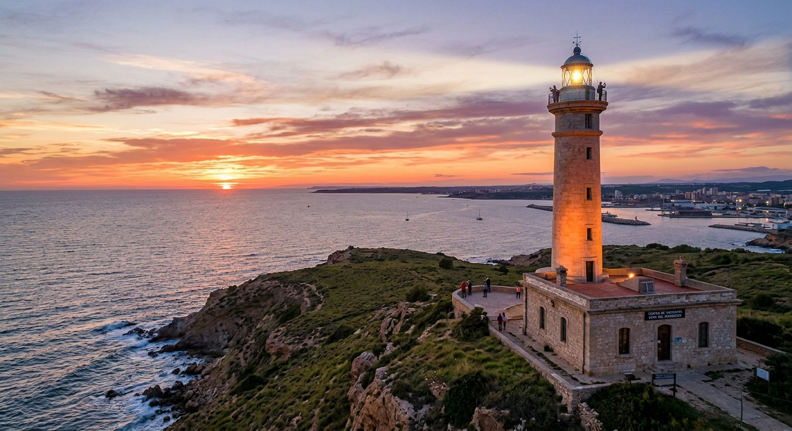

Bienvenido a Puerto Aurora
Donde el mar austral abraza la Patagonia
¿Qué nos caracteriza?
Ubicada en el imponente litoral de la Patagonia austral, Puerto Aurora combina la majestuosidad del Atlántico Sur
con el encanto de una próspera villa marinera marcada por la historia y la naturaleza salvaje.
Descubrí lo mejor de nuestra ciudad
Lugares de Interés

Desde el imponente Faro del Fin de la Bahía hasta el paseo costero sobre las rocas, descubrí los rincones que definen nuestra identidad austral.
Propuestas Culturales
Explorá el Museo Histórico de Arte y Tradición Marina, descubriendo la rica herencia cultural de nuestra ciudad.
Actividades y Eventos
Viví la emblemática Fiesta de la Pesca Austral y sumate a los avistajes guiados de fauna marina.
Avisos al Visitante
Avistaje de Fauna: Durante esta época del año, los miradores de la costa norte ofrecen excelentes puntos para avistar lobos marinos.
Consultá el clima en el Servicio Meteorológico Nacional.